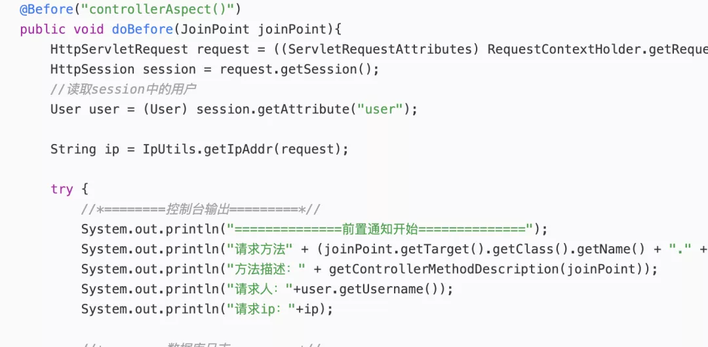

前言
用户在操作我们系统的过程中，针对一些重要的业务数据进行增删改查的时候，我们希望记录一下用户的操作行为，以便发生问题时能及时的找到依据，这种日志就是业务系统的操作日志。
本篇我们来探讨下常见操作日志的实现方案和可行性
常见的操作日志类型
总结来说，就是重要的增删改查根据业务的需要来做操作日志的埋点。
实现方案对比
基于AOP（切面）传统的实现方案
基于数据库Binlog
方案实现细节
一、基于AOP切面+注解的传统方案
传统的做法就是切面+注解的方式，这种对代码的侵入性不强，通常记录ip、业务模块、操作账号、操作场景、操作来源等等，一般在注解+拦截器里这些值都拿得到，如下图所示：
这种常见的我们在通用方法都可以处理，但是在数据变更方面，一直没有较好的实现方式，比如数据在变更前是多少，变更后是多少。
以我们以前实现的一套方案来说，基于数据变更的记录方式不仅要和需求方约定好模板（上百个字段的不可能都做展示和记录），也要和前端做一些约定，比如在修改之前的值是多少，修改后的值是多少，如下代码客官请看：
@Valid
@NotNull(message = "新值不能为空")
@UpdateNewDataOperationLog
private T newData;
@Valid
@NotNull(message = "旧值不能为空")
@UpdateOldDataOperationLog
private T oldData;
存在的问题：
再以一个场景为例，再删除之前需要记录删除前的值，是不是还得再查一次~
@PostMapping("/delete")
@ApiOperation(value = "删除用户信息", notes = "删除用户信息")
@DeleteOperationLog(system = SystemNameNewEnum.SYS_JMS_LMDM, module = ModuleNameNewEnum.LMDM_AUTH, table = LogBaseTableNameEnum.TABLE_USER, methodName = "detail")
二、基于数据库Binlog 方案
系统架构图如下：
 「主要分为3块：」
「主要分为3块：」
{"data":[{"id":"122158992930664499","bill_type":"1","create_time":"2020-04-2609:15:13","update_time":"2020-04-2613:45:46","version":"2","trace_id":"exclude-f04ff706673d4e98a757396efb711173"}],
"database":"yl_spmibill_8",
"es":1587879945200,
"id":17161259,
"isDdl":false,
"mysqlType":{"id":"bigint(20)",
"bill_type":"tinyint(2)",
"create_time":"timestamp",
"update_time":"timestamp",
"version":"int(11)",
"trace_id":"varchar(50)"},
"old":[{"update_time":"2020-04-2613:45:45",
"version":"1",
"trace_id":"exclude-36aef98585db4e7a98f9694c8ef28b8c"}],
"pkNames":["id"],"sql":"",
"sqlType":{"id":-5,"bill_type":-6,"create_time":93,"update_time":93,"version":4,"trace_id":12},
"table":"xxx_transfer_bill_117",
"ts":1587879945698,"type":"UPDATE"}
处理完binlon日志转换后的操作日志，如下：
{
"id":"120716921250250776",
"relevanceInfo":"XX0000097413282,",
"remark":"签收财务网点编码由【】改为【380000】，
签收网点名称由【】改为【泉州南安网点】，签收网点code由【】改为【2534104】，运单状态code由【204】改为【205】，签收财务网点名称由【】改为【福建代理区】，签收网点id由【0】改为【461】，签收标识,1是，0否由【0】改为【1】，签收时间由【null】改为【2020-04-24 21:09:47】，签收财务网点id由【0】改为【400】，",
"traceId":"120716921250250775"
}
库表设计
CREATE TABLE `table_config` (
`id` bigint(20) NOT NULL AUTO_INCREMENT COMMENT 'id',
`database_name` varchar(50) CHARACTER SET utf8mb4 COLLATE utf8mb4_general_ci DEFAULT NULL COMMENT '数据库名',
`table_name` varchar(50) CHARACTER SET utf8mb4 COLLATE utf8mb4_general_ci DEFAULT NULL COMMENT ' 数据库表名',
PRIMARY KEY (`id`),
UNIQUE KEY `unq_data_name_table_name` (`database_name`,`table_name`) USING BTREE COMMENT '数据库名表名联合索引'
) ENGINE=InnoDB AUTO_INCREMENT=35 DEFAULT CHARSET=utf8mb4 COLLATE=utf8mb4_0900_ai_ci COMMENT='数据库配置表';
CREATE TABLE `table_field_config` (
`id` bigint(20) NOT NULL AUTO_INCREMENT,
`table_config_id` bigint(20) DEFAULT NULL,
`field` varchar(50) CHARACTER SET utf8mb4 COLLATE utf8mb4_general_ci DEFAULT NULL COMMENT '字段 数据库',
`field_name` varchar(50) CHARACTER SET utf8mb4 COLLATE utf8mb4_general_ci DEFAULT NULL COMMENT '字段 中文名称',
`enum_flag` tinyint(2) DEFAULT NULL COMMENT '是否枚举字段(1:是,0:否)',
`relevance_flag` tinyint(2) DEFAULT NULL COMMENT '是否是关联字段(1:是,0否)',
`sort` int(11) DEFAULT NULL COMMENT '排序',
PRIMARY KEY (`id`),
KEY `idx_table_config_id` (`table_config_id`) USING BTREE COMMENT '表ID索引'
) ENGINE=InnoDB AUTO_INCREMENT=2431 DEFAULT CHARSET=utf8mb4 COLLATE=utf8mb4_0900_ai_ci COMMENT='数据库字段配置表';
CREATE TABLE `table_field_value` (
`id` bigint(20) NOT NULL,
`field_config_id` bigint(20) DEFAULT NULL,
`field_key` varchar(50) CHARACTER SET utf8mb4 COLLATE utf8mb4_general_ci DEFAULT NULL COMMENT ' 枚举',
`filed_value` varchar(50) CHARACTER SET utf8mb4 COLLATE utf8mb4_general_ci DEFAULT NULL COMMENT '枚举名称',
PRIMARY KEY (`id`),
KEY `ids_field_config_id` (`field_config_id`) USING BTREE
) ENGINE=InnoDB DEFAULT CHARSET=utf8mb4 COLLATE=utf8mb4_0900_ai_ci COMMENT='数据字典配置表';
效果

image
基于binlog实现方案未来规划
优化发送业务消息的实现，使用切面拦截减少对业务代码的侵入；
目前暂时不支持对多表关联操作日志记录，需要拓展；
总结
本文以操作日志为题材讨论了操作日志的实现方案和可行性，并且都已经在功能上进行实现，其中使用aop方案也是大部分中小企业的首选实现方案，但是在一些金融领域以及erp相关系统，对操作日志记录明细要求极高，常见技术方案很难满足，即使能够满足也会带来一些代码强侵入以及性能问题，所以我们又讨论了基于binlog实现的方案，该方案虽然比对aop来说增强了技术的复杂性，但是对于有一定技术积累的团队来说不算什么难事，并且该方案我们都实现了上线，并且解决了代码层面上的侵入，属于跨语言级别的，相信对读者还是有一定的启发。
最后的最后，如果你觉得本文有收获，来个点赞转发可好~
日志规范多重要，这篇文章告诉你！
IDEA依赖冲突分析神器—Maven Helper
我把SpringBoot的banner换成了美女，老板说工作不饱和，建议安排加班
哪些数据可以放进缓存？记录生产环境一次缓存评估的过程